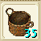
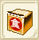

|
百萬金庫（空） |
Rank1、種類：不明
100万Ｇを入れることのできる金庫です。
ちなみに台湾の相場で空の状態で20〜50万Ｇぐらいするそうです。 |
|
黒鍵 |
日本でもあった黒鍵です。
鑑定済みで５個単位で出てくるようです。
最大スタック９９９個。 |
|
白鍵 |
日本でもあった白鍵です。
鑑定済みで５個単位で出てくるようです。
最大スタック９９９個。 |
|
？蟹鍋收納餐盒 |
カニ鍋３Ｓを１マスに納められる収納箱。
さらにそれを３Ｓ重ねれるので、１マスに９Ｓ入ります。
食料詰めてない状態だと６個が１マスに入ります。 |
|
泡菜鍋收納餐盒 |
ビビンバ３Ｓを１マスに納められる収納箱。
さらにそれを３Ｓ重ねれるので、１マスに９Ｓ入ります。
食料詰めてない状態だと６個が１マスに入ります。 |
|
壽喜鍋收納餐盒 |
すき焼き３Ｓを１マスに納められる収納箱。
さらにそれを３Ｓ重ねれるので、１マスに９Ｓ入ります。
食料詰めてない状態だと６個が１マスに入ります。 |
|
漢堡收納餐盒 |
ハンバーグ３Ｓを１マスに納められる収納箱。
さらにそれを３Ｓ重ねれるので、１マスに９Ｓ入ります。
食料詰めてない状態だと６個が１マスに入ります。 |
|
採取便利組 |
下記６種類の採取便利アイテムがランダムに１０個出てきます。 |
 |
猟物保存箱（青椒専用） |
ピーマンを１０マス分を１枠にまとめれるアイテム。
未収納だと50個までスタック可能。
詰めた後は重ねることができません。 |
|
猟物保存箱（藍専用） |
塩を１０マス分を１枠にまとめれるアイテム。
未収納だと50個までスタック可能。
詰めた後は重ねることができません。 |
|
？？？？（銅専用） |
銅１０マス分を延べ棒２０個にするアイテム。
耐久は50/50
これの名前の字がよめねぇーｗ |
 |
？？？？（銀専用） |
銀１０マス分を延べ棒２０個にするアイテム。
耐久は50/50 |
|  |
伐木竹？ |
イエローメランチを１０マス分を１マスにまとめるアイテム。
まとめたあとは、重ねることができません。
５０個までスタック可能です。 |
|
採花竹？ |
アイリスを１０マス分を１マスにまとめるアイテム。
まとめたあとは、重ねることができません。
５０個までスタック可能です。 |
|
任意鑰匙 |
Ｒ６-８の採取物の場所にワープできます。
詳しくは任意鍵のページをご覧下さい。。 |
|
技能屋進入券 |
ＰＵＫ１までのスキルをすべて習得できる部屋に入れる券です。 |
|
元素水晶交換券 |
新街？の宿で、水晶に交換してもらえます。
同じ種類のを集めて売れば（最大３個）さらに高値で売れます。
１枚交換で３個の水晶になるようです。 |
|
元素石交換券 |
Ｗクリックすると元素石？が１個でてきます。
同じ種類のを集めて売れば（最大３個）さらに高値で売れます。
１枚につき１個ずつでてくるようです。 |
|
風元素石 |
上記の元祖石交換券をＷクリックででてくるものです。 |
|
火元素石 |
上記の元祖石交換券をＷクリックででてくるものです。 |
|
水元素石 |
上記の元祖石交換券をＷクリックででてくるものです。 |
|
上下小撲満（１Ｈ） |
バーストを入れて他キャラに渡すことができます。
バースト入れない状態だと取引は不可能です。
置いたら消えるので注意。 |
|
上下？時小？鐘-Mini |
クリックするだけで、バーストのオンオフの切り替えができます。
Dur５ |
|
布斯特薬草 |
ブーストハーブだったっけ？
使うと、どれかのスキル経験値が40あがります。 |
|
再生劇薬 |
ＢＰををLv1の状態から振りなおせるリセット薬です。 |
|
寶箱上下怪箱 |
Ｗクリックすると、ランダムで箱のプロフカードが１枚でてきます。 |
|
収納餐盒寶箱 |
Ｗクリックすると、高Ｒの食料保存箱（おかもち）がでてきます。
ちなみに３個単位で２回でてきます。 |
|
結晶石寶箱 |
Dur3/3と書いてますが、Ｗクリック１回したらなくなりますｗ
Ｗクリックで、R10宝石がランダムにでてきます。
アイオやタンブライトなどは出てきません。 |
|  |
食神料理箱 |
Rank1、Dur99/99
「上古食神遺留下來的物品」とかいておりますがよくわかりません・・・。 |